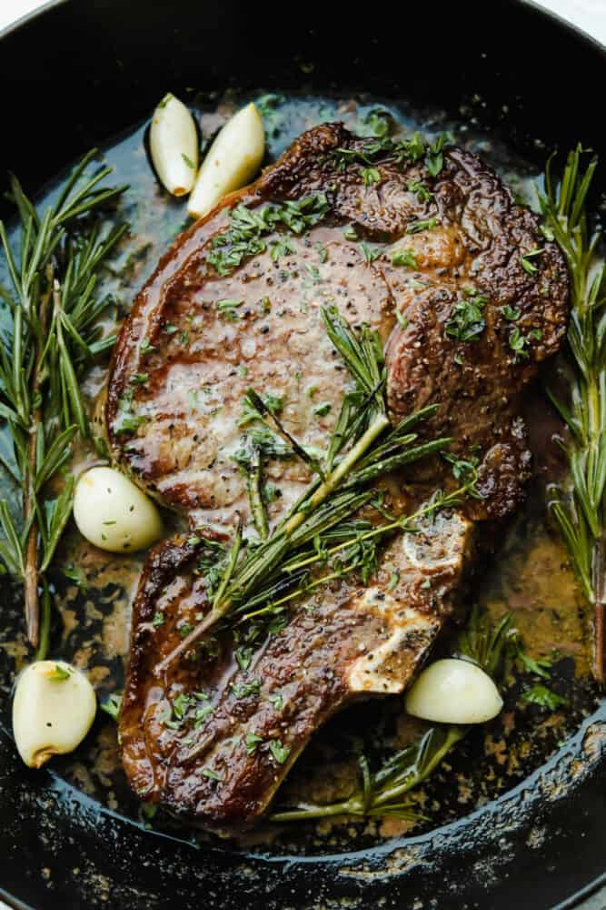

Ribeye Steak

Description
Ribeye Steak is a popular beef dish worldwide. As a popular dish,
it is a very
intimidating dish to cook since it needs a decent or solid skill in
spotting doneness in the meat.
This dish is composed of ribeye steak, butter, garlic, etc.
Ingredients:
- Two 1 1/4 pound, bone-in rib eye steaks
- Kosher salt
- Freshly ground pepper
- 2 tablespoons canola oil
- 4 tablespoons unsalted butter
- 4 thyme sprigs
- 3 garlic cloves
- 1 rosemary sprig
Steps:
-
Season the rib eye steaks all over with salt and freshly grounded
pepper.
Let the meat stand at room temperature for 30 minutes.
-
In a large cast iron-skillet, heat the canola oil until shimmering. Add
the steaks
and cook over high heat until crusty on the bottom, about 5 minutes.
Turn the
steaks and add butter, thyme, garlic and rosemary to the skillet. Cook
over
high heat, basting the steaks with the melted butter, garlic and herbs,
until the
steaks are medium-rare, 5 to 7 minutes longer. Transfer the steaks to a
cutting
board and let rest for 10 minutes. Cut the steaks off the bone, then
slice the meat
across the grain and serve.